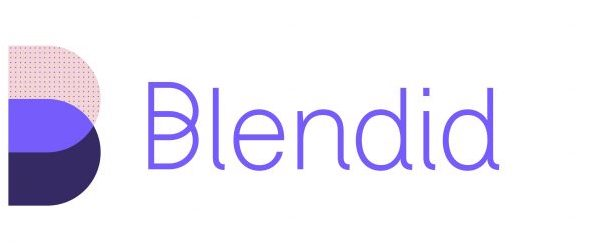

Kedar Abhyankar
Student at Purdue University krabhyankar@gmail.com
I am a undergraduate student in my Sophomore Year at Purdue University in West Lafayette, Indiana. I am currently studying Robotics Engineering Technology at the Polytechnic Institute, and actively in the process of transitioning to a Computer Science major.
Prior Job Experience
Genesys Cloud Software Engineering Intern
Worked directly with the Identity and Access Management Team (IAM Team) to develop and build on existing authentication mechanisms built into Genesys. Developed a client generation platform in Javascript with a React Native frontend, used Java and Spring Boot to create a OAuth supported login proxy, and worked in Go to enhance systems already in place. Some examples of things I worked on in Go include a password validation schema and bulk deletion of clients. Worked with both NoSQL database services like DynamoDB and managed, in-memory databases like Redis when building the aforementioned applications.
CS18000 Undergraduate Teaching Assistant
Assists students in mastering concepts taught in the introductory Computer Science course taught at Purdue University, called CS18000. CS18000 focuses on the introduction to algorithms and object oriented program, by teaching students the Java Programming Language. Concepts that are taught in this class include basics such as string manipulation, polymorphism, and abstraction, as well as more complex topics such as dynamic data structures, network I/O, recursion, and the building of Graphical User Interfaces. As a TA for this course, I am responsible for making sure that students can address any questions regarding the material taught in the class, homework, projects, and labs as well as answering questions asked in class through the Q/A platform developed by Purdue called HotSeat.
Computer Science Curriculum Academic Term Developer
Wrote projects, homework assignments, and labs as part of the CS18000 curriculum for the Spring 2020 semester, as well as the Summer 2020 session. We utilized Vocareum as a platform for grading, while all test scripts written in Java 10 with JUnit 4.12.
Computer Science Curriculum Summer 2019 Developer
Wrote projects, homework assignments, and labs as part of the CS18000 curriculum for the Fall 2019 semester. Utilized Vocareum as a platform for grading, while all test scripts written in Java 10 with JUnit 4.12.
Hall of Music Student Technician
Allows me to continue my passion for doing theatre tech while in college. I perform a variety of audio visual tasks based on the event. Similar to my job as a McAfee Theatre Student Technician, I work on events with clients and make sure that their events are exactly how they planned for it to run. When it comes to actual tasks, I mainly work video events - for a majority of my first year(Fall 2018 - Spring 2019) I worked video tech backstage, managing presentations that clients had. For my second year in the job, which is from Fall 2019 to Spring 2020, I will be working events for Football games and Basketball games, with more complex and advanced techniques needed to run video and audio.
McAfee Theatre Student Technician
Helped around theatre with technical work. Learned about theatre performances, used lightboards and soundboards. Also improved communication skills further as I learned to work with a variety of audiences, who may or may not have had certain requests I had to fulfill during or before the show. Ended this job once I began college, as I was home for lesser amounts of time and didn't have as much time to dedicate to this job.

Software Intern
This was a summer job where I was able to pre-build on skills that I would be learning a lot more about in college. I self-taught myself the Google Tensorflow API, as well as implemented many machine learning instances. I also experimented a little bit with using the Google TPU Cloud, and learned how to cross-communicate between different platforms, from Raspberry Pi based systems to systems made by Universal Robots. I also learned a lot more Python during this internship, and also learned the very "pythonic" language of URScript.
Summer Intern
As my first job, I learned crucial skills such as working with people older than me in a professional setting. Also learned how to work with younger kids, as well as improved my skills to work with kids of all needs. This is where most of my communication skills were developed, as I learned how to talk to parents, guardians, and other people in charge of campers.
Education
Purdue University
Relevant Classes
- CS 18000 - Problem Solving and Object Oriented Programming
- CS 19300 - Tools
- CS 18200 - Foundations of Computer Science
- CS 24000 - Programming in C
- CS 25000 - Computer Architecture
- CS 25100 - Data Structures and Algorithms
- CS 49000-iOS - iOS Development in Swift
- CS 29000-CP1 - Competitive Programming I
Relevant classes in Fall 2020 Schedule
- CS 25200 - Systems Programming
- CS 30700 - Software Engineering I
Skills
Interests
Outside of college work, I love to explore new activities and try unique activities. Since High School, I have always been into music, and whether it be a little bit of music production I do on the side, or if its my love for analog audio through listening to vinyl, I love collecting and playing records. I also play guitar, both electric and acoustic. Aside from this, I enjoy trying and tasting new types of coffees. I prefer single origin coffees, and enjoy French Pressing or Aeropressing and cold brewing coffee.